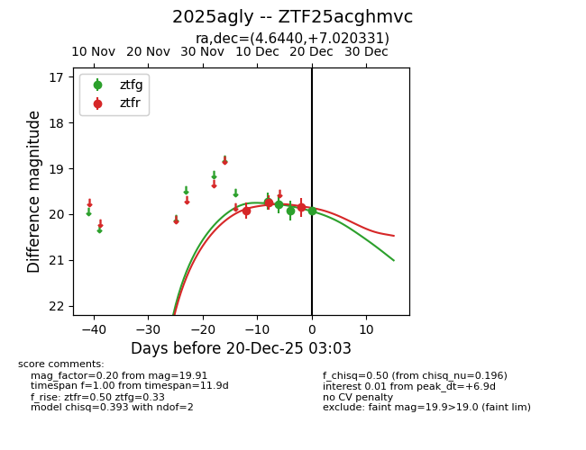
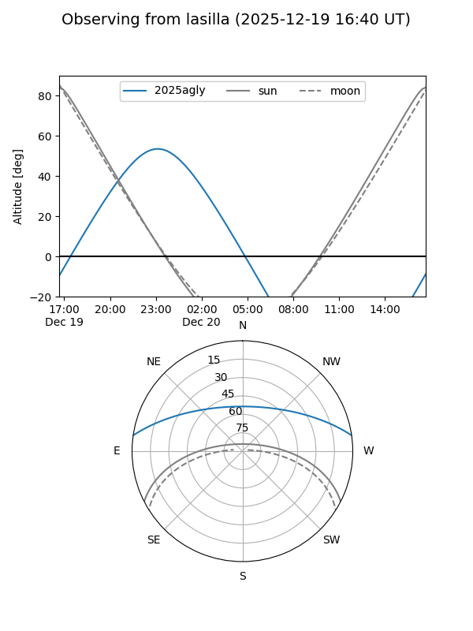
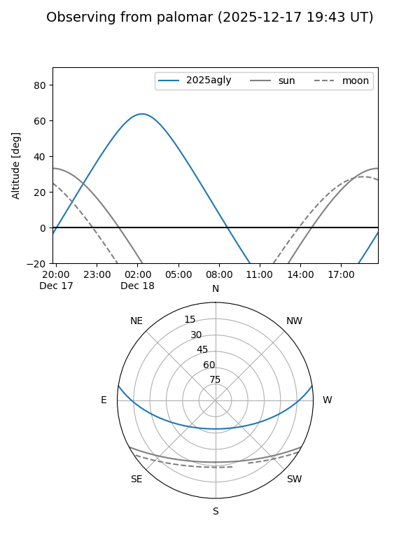
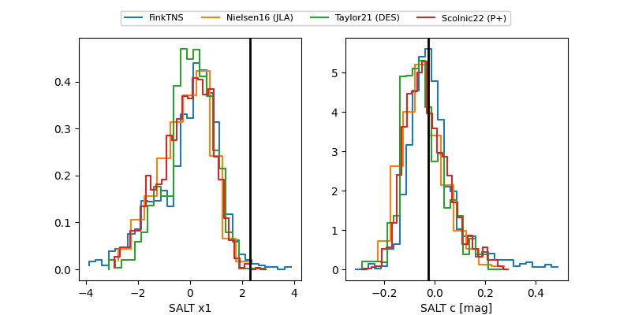

2025agly
Target 2025agly at 2025-12-20 03:04
Aliases and brokers:
FINK: fink-portal.org/ZTF25acghmvc
Lasair: lasair-ztf.lsst.ac.uk/objects/ZTF25acghmvc
ALeRCE: alerce.online/object/ZTF25acghmvc
TNS: wis-tns.org/object/2025agly
YSE: ziggy.ucolick.org/yse/transient_detail/2025agly
alt names
ZTF25acghmvc (ztf,fink_ztf)
2025agly (tns,yse)
Coordinates:
equatorial (ra, dec) = 4.6440,+7.02033
equatorial (HMS+DMS) = 00:18:34.55,+07:01:13.19
galactic (l, b) = (108.6391,-54.93688)
Flags:
Photometry:
last ztfg=19.91, ztfr=19.85
4 ztfg, 3 ztfr detections
Lightcurve

Visibility


Additional plots
